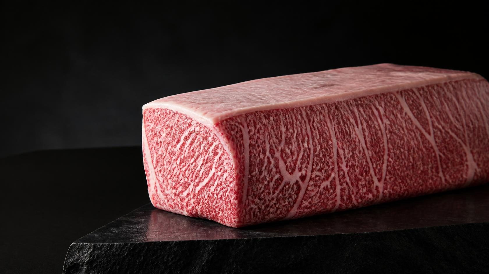
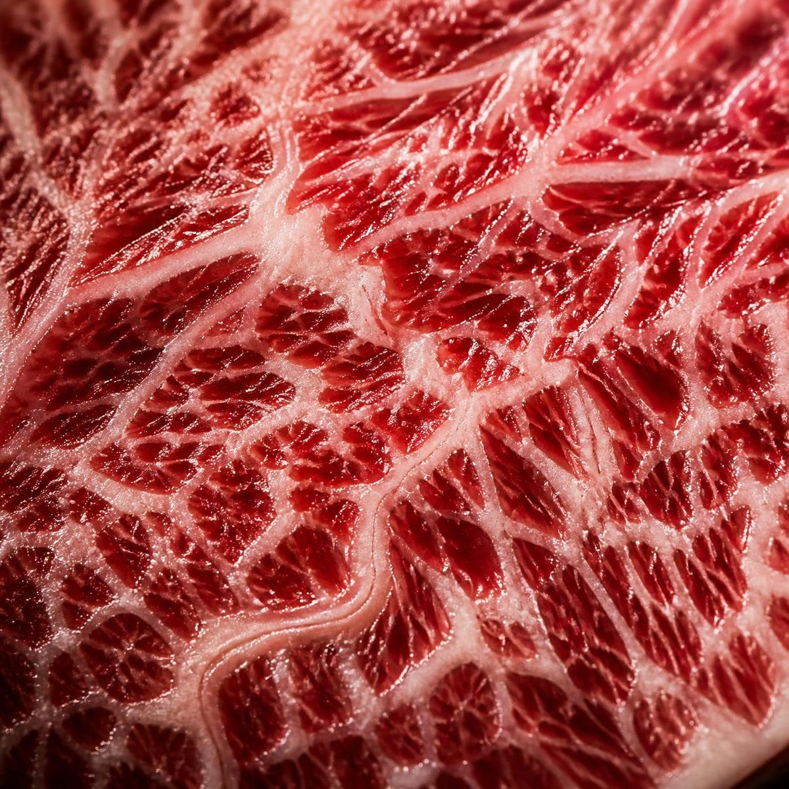
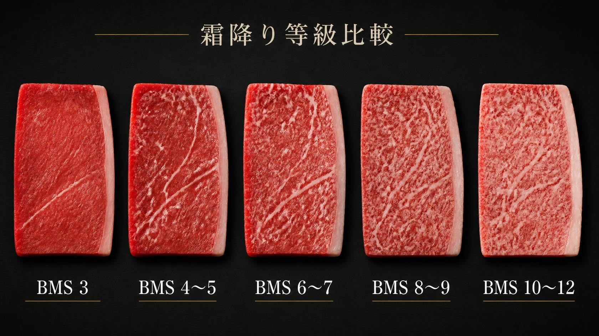
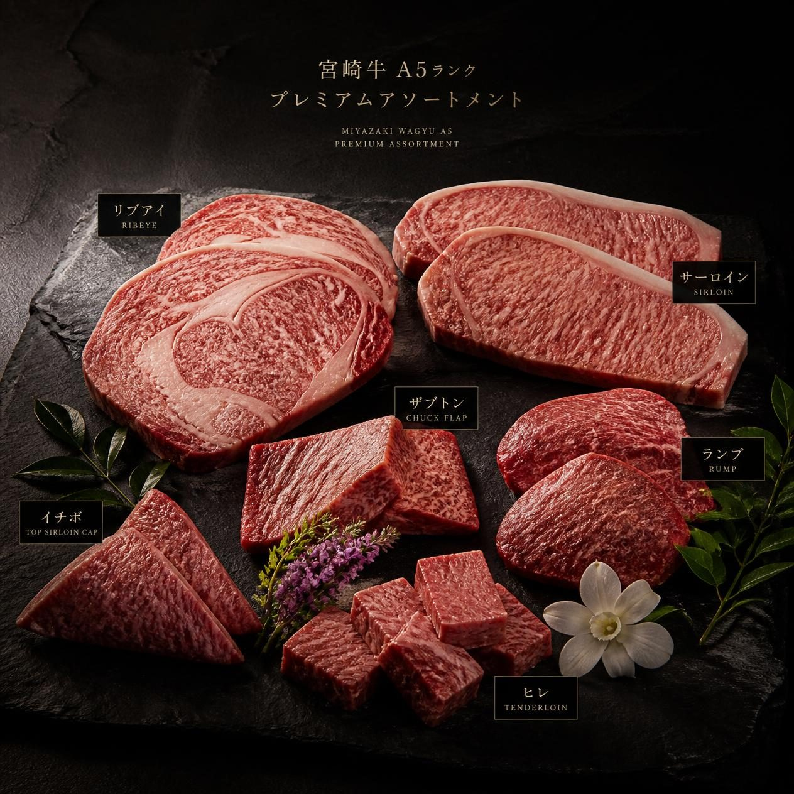
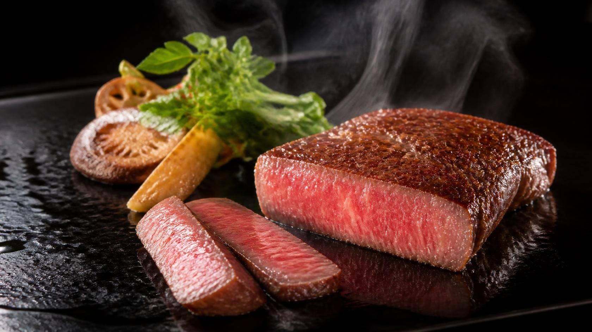

MIYAZAKI WAGYU
内閣総理大臣賞4大会連続受賞。日本が世界に誇る最高峰のブランド牛。
連續四屆榮獲內閣總理大臣賞。日本引以為傲、世界最高峰的和牛品牌。
4 consecutive Prime Minister's Awards. Japan's proudest wagyu brand, recognized worldwide.
日本での知名度・実績
日本知名度與實績
JAPAN REPUTATION
内閣総理大臣賞 4大会連続受賞
日本最高峰の和牛品評会「全国和牛能力共進会」で4大会連続最高賞を受賞。この記録は日本の和牛史上前例のない快挙。
內閣總理大臣賞連續四屆獲獎
在日本最高規格的和牛評鑑會上連續四屆獲得最高獎，這是日本和牛史上前所未有的壯舉。
Prime Minister's Award — 4 Consecutive Wins
The only wagyu to win the top honor at Japan's National Wagyu Competition four consecutive times — an unprecedented achievement in wagyu history.
世界トップシェフが認める品質
ミシュランシェフをはじめ、世界中の一流シェフが最高の和牛として評価。その名は世界のグルメシーンを席巻している。
獲世界頂尖主廚認可的品質
包括米其林主廚在內的全球頂尖廚師，都將其評為最高級別的和牛，聲名享譽全球美食界。
Recognized by the World's Top Chefs
From Michelin-starred chefs to the world's finest culinary talents, Miyazaki Wagyu is universally acclaimed as the pinnacle of premium beef.
宮崎牛は全国和牛能力共進会で4大会連続内閣総理大臣賞を受賞した、日本が世界に誇る最高峰のブランド牛。宮崎県の温暖な気候と豊かな自然、農家の情熱が生み出す圧倒的な霜降りと豊かな風味は、世界中のトップシェフを魅了し続けています。
宮崎和牛在全國和牛能力共進會中連續四屆榮獲內閣總理大臣賞，是日本引以為傲、馳名世界的頂級和牛品牌。宮崎縣的溫暖氣候、豐富自然環境與農家的熱情，共同孕育出壓倒性的霜降紋理與豐富風味，持續吸引全球頂尖主廚的青睞。
Miyazaki Wagyu has won the Prime Minister's Award at Japan's National Wagyu Competition four consecutive times, making it Japan's proudest and most internationally renowned wagyu brand. Its extraordinary marbling and rich flavor, born from Miyazaki's warm climate, rich nature, and passionate farmers, continue to captivate the world's top chefs.
品種の特徴
品種特徵
CHARACTERISTICS
BMS12の極致を追求した霜降りは、見た目の美しさと口溶けの良さが他の追随を許さない。
追求BMS12極致的霜降，在視覺美感與入口即化的口感上，無與倫比。
Pursuing the ultimate BMS12 marbling, its visual beauty and melt-in-the-mouth texture stand in a class of their own.
宮崎の豊かな自然と独自の飼育法が生む、複雑で深みのある旨みと芳醇な香り。
宮崎豐富的自然環境與獨特的飼育方式，造就複雜而深邃的鮮味與芳醇香氣。
Miyazaki's rich natural environment and unique breeding methods create a complex, deep umami and aromatic richness unlike any other.
厳格な品質管理のもと生産される宮崎牛は、国際的な食品安全基準を満たす最高品質。
在嚴格品質管理下生產的宮崎和牛，符合國際食品安全標準，品質無可挑剔。
Produced under strict quality management, Miyazaki Wagyu meets international food safety standards with uncompromising quality.

霜降りグレード
霜降等級
MARBLING GRADE

風神匠が提供するのは最高グレードのみ。
風神匠只提供最高等級。
Fujin Takumi delivers only the highest grade.
宮崎牛のBMSは最高値12に近い水準を誇る。風神匠が台湾にお届けするのは最高グレードの宮崎牛のみです。
宮崎和牛的BMS接近最高值12的水準。風神匠送達台灣的只有最高等級的宮崎和牛。
Miyazaki Wagyu boasts BMS scores approaching the maximum of 12. Fujin Takumi delivers only the highest grade Miyazaki Wagyu to Taiwan.
主要部位
主要部位
PREMIUM CUTS

宮崎牛最大の魅力が詰まった部位。豊かな霜降りと深い旨みのバランスが絶妙。
最能展現宮崎和牛魅力的部位。豐富的霜降與深邃的鮮味達到絕妙平衡。
The cut that best captures Miyazaki Wagyu's greatest appeal — a perfect balance of rich marbling and deep umami.
最も霜降りが豊富で濃厚な旨みを持つ部位。鉄板焼き・焼肉で真価を発揮。
霜降最豐富、鮮味最濃郁的部位，在鐵板燒與燒肉中展現真正價值。
The richest marbling and most intense flavor. Reveals its true value in teppanyaki and yakiniku.
宮崎牛の繊細な旨みが凝縮した最も柔らかい部位。コース料理の主役として最適。
凝聚宮崎和牛細膩鮮味的最柔嫩部位，是套餐主菜的最佳主角。
The most tender cut, concentrating Miyazaki Wagyu's delicate umami. Perfect as the star of a fine dining course.
希少部位の中でも特に人気が高い。豊かな霜降りと独特の甘みが特徴。
稀少部位中人氣最高，以豐富的霜降與獨特的甜味為特徵。
The most popular among rare cuts, characterized by rich marbling and a unique sweetness.
仕上がり
料理呈現
CULINARY EXCELLENCE

産地環境
產地環境
ORIGIN
宮崎県の温暖な気候と豊かな自然環境、農家の代々受け継がれた飼育技術が、世界最高峰の宮崎牛を生み出しています。
宮崎縣的溫暖氣候、豐富的自然環境，以及世代傳承的飼育技術，共同孕育出世界最高峰的宮崎和牛。
Miyazaki's warm climate, rich natural environment, and generations of inherited breeding expertise together create the world's finest wagyu.
宮崎牛の仕入れについてご相談ください。
最適なカット・数量・スケジュールをご提案いたします。
歡迎諮詢宮崎和牛採購事宜。
我們將為您提供最適合的部位、數量與時程建議。
Contact us to discuss Miyazaki Wagyu sourcing.
We'll recommend the best cuts, volumes, and schedules for your needs.